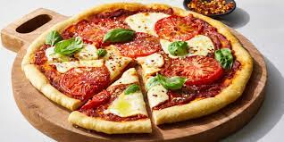

Description
Pizza is a crowd pleasing dish for busy weeknights and fun weekend dinners. But you don't always have to order take-out if you want to enjoy and crispy and cheesy pizza. Follow below to find out how you can make a fabulous pizza for you and your guests. We will take you through the steps to create an amazing pizza each and every time!
Ingredients
- Pre-made marinara sauce
- Mozzarella
- Pre-made pizza dough
- Your choice of pizza toppings
Steps
- Heat the oven between 450 and 500 degrees
- Form the pizza dough and place it on a peel dusted with a little flour or cornmeal
- Slip the pizza onto the hot pizza stone
- The pizza is done when the cheese is melted to a medium-to-dark brown